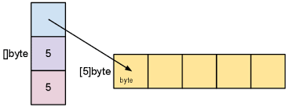

Understanding Data Structure of Type {++ Slice++}.
Objective
Understanding {++ Slice's++} in Go.

Slice are dynamic versions of array, slices can grow & shrink in length as required. Underlying the slice is an array and a pointer to it, exactly how the Go compiler stores the slice is a little complex, we will cover it in the "Intermediate" section of the tutorial.
Structure
Navigate to our code folder
code/basic/
For our program create a new folder '12_slice'
code/basic/12_slice/
And lets create a file 'slice.go' in it, finally the structure would look like this:
code/basic/12_slice/slice.go
Declaration
Syntax
Declaration & initialization method
sliceName := []type{value1, value2, ...}
With built-in function make()
slice := make([]type, length, capacity)
Make initializes the underlying array with zero value and returns a slice that refers to that array. Make is used extensively to initialize slices.
Code
We will write the code in 4 parts:
1.)
part-1 slice.go
1 package main
2
3 import "fmt"
4
5 func main() {
6 // declaring a nil slice
7 var slice1 []int
8 fmt.Println("slice1:", slice1)
9 fmt.Println("The length of slice1 is:", len(slice1))
10 fmt.Println("The capacity of slice1 is:", cap(slice1))
11 fmt.Println()
12 // declaring a slice with initialization
13 slice2 := []int{1, 2, 3, 4, 5}
14 fmt.Println("slice2:", slice2)
15 fmt.Println("The length of slice2 is:", len(slice2))
16 fmt.Println("The capacity of slice2 is:", cap(slice2))
17 fmt.Println()
18
19 // declaring a slice of length 5 with make
20 slice3 := make([]string, 5)
21 fmt.Println("slice3:", slice3)
22 fmt.Println("The length of slice3 is:", len(slice3))
23 fmt.Println("The capacity of slice3 is:", cap(slice3))
24 fmt.Println()
25
Review
On line 7, 13 & 20 we declare slice using different syntax
var slice1 []int
This declares a nil slice, the length & capacity are zero. As you will see in forth coming examples, slices can have variable length and capacity.
Slices can dynamically resize till it reaches its capacity, we will shortly see how this is done.
slice2 := []int{1, 2, 3, 4, 5}
Above line declares a slice and initializes its value, in this case length & capacity are equal.
slice3 := make([]string, 5)
This initializes a zero value slice with the length & capacity of 5. Note the difference in length & capacity of slice3 as compared to slice1.
2.)
part-2 slice.go
26 // declaring a slice of length 5 and capacity 10 with make
27 slice4 := make([]int, 5, 10)
28 fmt.Println("slice4:", slice4)
29 fmt.Println("The length of slice4 is:", len(slice4))
30 fmt.Println("The capacity of slice4 is:", cap(slice4))
31 fmt.Println()
32
33 // inserting values, note i < 6 will give an error as we have
34 // set the length to 5
35 for i := 0; i < 5; i++ {
36 slice4[i] = i
37 }
38 fmt.Println("slice4:", slice4)
39 fmt.Println()
40
41 // increasing the length of slice
42 fmt.Println("Increasing the length of slice...")
43
44 // slice4 = slice4[:11] will give an error as capacity is 10
45 slice4 = slice4[:10]
46 fmt.Println("The length of slice4 is:", len(slice4))
47 fmt.Println("The capacity of slice4 is:", cap(slice4))
48 for i := 5; i < 10; i++ {
49 slice4[i] = i
50 }
51 fmt.Println()
52
53 // printing slice4
54 fmt.Println("slice4:", slice4)
55 fmt.Println()
56
Review
On line 27 we declare a new slice with length = 5 and capacity = 10.
slice4 := make([]int, 5, 10)
Then on line 35 we insert values into the slice, note we insert values only till index = 4 or length = 5 (remember our index starts from 0 and not 1!)
If we exceed length of 5, it will throw an error as we have declared our length as 5.
On line 45 we dynamically increase the length to 10.
slice4 = slice4[:10]
Now we can insert values upto length = 10 or index = 9. On line 54 we print out our new slice.
fmt.Println("slice4:", slice4)
3.)
part-3 slice.go
Review
We can create new slice from an existing one, on line 58 we create a new slice5 which has values from slice4 but only from index 2 to 8.
slice5 := slice4[2:8]
Then we print out the slice on line 59.
fmt.Println("slice5:", slice5)
4.)
part-4 slice.go
62 // two-D slice
63 twoD := [][]int{{3, 4}, {1, 5}, {9, 2}, {7, 8}}
64 fmt.Println("Print out values of twoD slice...")
65 for i, subSlice := range twoD {
66 fmt.Printf("At index: %d of twoD, Value: %v\n", i, subSlice)
67 for index, value := range subSlice {
68 fmt.Printf("Index: %d Value: %d\n", index, value)
69 }
70 fmt.Println()
71 }
72 }
Review
Slice can have slices inside it, above we create a two-D slice, i.e a slice inside a slice, you can create multiple dimension slices, e.g three-D or four-D or even larger.
On line 63 we declare a two-D slice of type int
twoD := [][]int{{3, 4}, {1, 5}, {9, 2}, {7, 8}}
Note the syntax, it contains a slice within a slice, all separated by curly brackets and comma. On line 65 we start a for-range loop to print all the values inside two-D
for i, slice := range twoD
This takes the first slice inside twoD and assigns it to the variable "subSlice", then we again loop over subSlice to print all the values.
for index, value := range subSlice
Creating multi-dimension slices also increases the complexity, Go offers multiply other data types to tackle this as we will study then in forth coming chapters.
Full Code
slice.go
package main
import "fmt"
func main() {
// declaring a nil slice
var slice1 []int
fmt.Println("slice1:", slice1)
fmt.Println("The length of slice1 is:", len(slice1))
fmt.Println("The capacity of slice1 is:", cap(slice1))
fmt.Println()
// declaring a slice with initialization
slice2 := []int{1, 2, 3, 4, 5}
fmt.Println("slice2:", slice2)
fmt.Println("The length of slice2 is:", len(slice2))
fmt.Println("The capacity of slice2 is:", cap(slice2))
fmt.Println()
// declaring a slice of length 5 with make
slice3 := make([]string, 5)
fmt.Println("slice3:", slice3)
fmt.Println("The length of slice3 is:", len(slice3))
fmt.Println("The capacity of slice3 is:", cap(slice3))
fmt.Println()
// declaring a slice of length 5 and capacity 10 with make
slice4 := make([]int, 5, 10)
fmt.Println("slice4:", slice4)
fmt.Println("The length of slice4 is:", len(slice4))
fmt.Println("The capacity of slice4 is:", cap(slice4))
fmt.Println()
// inserting values, note i < 6 will give an error as we have
// set the length to 5
for i := 0; i < 5; i++ {
slice4[i] = i
}
fmt.Println("slice4:", slice4)
fmt.Println()
// increasing the length of slice
fmt.Println("Increasing the length of slice...")
// slice4 = slice4[:11] will give an error as capacity is 10
slice4 = slice4[:10]
fmt.Println("The length of slice4 is:", len(slice4))
fmt.Println("The capacity of slice4 is:", cap(slice4))
for i := 5; i < 10; i++ {
slice4[i] = i
}
fmt.Println()
// printing slice4
fmt.Println("slice4:", slice4)
fmt.Println()
// creating a new slice
slice5 := slice4[2:8]
fmt.Println("slice5:", slice5)
fmt.Println()
// two-D slice
twoD := [][]int{{3, 4}, {1, 5}, {9, 2}, {7, 8}}
fmt.Println("Print out values of twoD slice...")
for i, slice := range twoD {
fmt.Printf("At index: %d of twoD, Value: %v\n", i, slice)
for index, value := range slice {
fmt.Printf("Index: %d Value: %d\n", index, value)
}
fmt.Println()
}
}
Running your code
Open your terminal and navigate to our folder
code/basic/12_slice/
Once in the folder type the following command
go run slice.go
Output
If there are no errors, you should get the output as:
Output
slice1: []
The length of slice1 is: 0
The capacity of slice1 is: 0
slice2: [1 2 3 4 5]
The length of slice2 is: 5
The capacity of slice2 is: 5
slice3: [ ]
The length of slice3 is: 5
The capacity of slice3 is: 5
slice4: [0 0 0 0 0]
The length of slice4 is: 5
The capacity of slice4 is: 10
slice4: [0 1 2 3 4]
Increasing the length of slice...
The length of slice4 is: 10
The capacity of slice4 is: 10
slice4: [0 1 2 3 4 5 6 7 8 9]
slice5: [2 3 4 5 6 7]
Print out values of twoD slice...
At index: 0 of twoD, Value: [3 4]
Index: 0 Value: 3
Index: 1 Value: 4
At index: 1 of twoD, Value: [1 5]
Index: 0 Value: 1
Index: 1 Value: 5
At index: 2 of twoD, Value: [9 2]
Index: 0 Value: 9
Index: 1 Value: 2
At index: 3 of twoD, Value: [7 8]
Index: 0 Value: 7
Index: 1 Value: 8
If for some reason your code isn't working, checkout the github repo or playground.
Github
Golang Playground
Next
In the next chapter we will study {++ Maps++}.